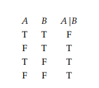

"Pain and suffering are always inevitable for a large intelligence and a deep heart." - Fyodor Dostoyevsky
Therefore, via affirming the consequent, we can conclude that, by feeling pain and suffering, I can achieve a large intelligence and a deep heart.
This is a catalogue of all the axioms, definitions, theorems, lemmas and corollaries I come across in the hope that one day, I might use one of them.
And, a question to all you "scientists" out there;
If Alan Turing is no longer alive, how is The Turing Test administered?
Truth-functional (adj.): "Combinations in which the truth or falsity of the new sentence is determined by the truth or falsity of its component sentences." - Mendelson Chapter 1.1, page 1
Negation: Operation represented by the symbol (¬). Changes a True to False and a False to True. Mendelson Chapter 1.1, page 1
Began reading on 12/01/2023.
Motivation: Logic is oddly fun to formalize and mess with in my head, but I ended up using a lot of the terms wrong. Recommended by my capstone SWE project sponsor.
Objective: Get good.
Chapter 1: The Propositional Calculus
My understanding is that this chapter concerns the basics of propositional logic. Turns out that... doesn't necessarily mean the basics are easy to wrap your head around.
Chapter 1.1: Propositional Connectives: Truth Tables
Truth-functional (adj.): "Combinations in which the truth or falsity of the new sentence is determined by the truth or falsity of its component sentences." - Page 1
Negation: Operation represented by (¬). Changes a True to False and a False to True. Page 1
Truth table: A table showing, for each combination of True or False given to the sentences, gives the output of the operation performed on them. Page 1
Negation truth table:
 Page 1
Page 1
Truth values: True or False in reference to the evaluation of an operation or the value given to a sentence. Note: From here on, T = True and F = False. Page 1
Conjunction: Operation represented by (∧). Page 1
Conjunction truth table:
 Page 1
Page 1
Conjuncts: Two or more sentences linked together by ∧. Page 1
Disjunction: Operation represented by (∨). Page 2
Disjunction truth table:
 Page 2
Page 2
Disjuncts: Two or more sentences linked together by ∨. Page 2
Conditional: Operation represented by (⇒). May be read as "If A, then B," for sentences A and B. Page 2
Antecedent: Sentence on the left side of ⇒.
Consequent: Sentence on the right side of ⇒.
Conditional truth table:
 Page 2
Page 2
Biconditional: Operation represented by (⇔). May be read as "A if and only if B," for sentences A and B. Page 3
Biconditional truth table:
 Page 3
Page 3
Propositional connectives: ¬, ∧, ∨, ⇒, ⇔. "Any sentence built up by application of these connectives has a truth value that depends on the truth values of the constituent sentences." Page 3
Statement letters: Letters that represent sentences and may take T or F as truth values. Page 3
Statement form: Expression built from statement letters and valid applications of propositional connectives. Page 3-4
-
All statement letters (capital italic letters) and statement letters with numerical subscripts are statement forms.
-
If B and C are statement forms, so are ¬B, (B∧C), (B∨C), (B⇒C) and (B⇔C).
-
Only the expression determined by the above 1. and 2. are statement forms.
Truth function: "For every assignment of truth values T or F to the statement letters that occur in a statement form, there corresponds, by virtue of the truth tables for the propositional connectives, a truth value for the statement form." May be represented accurately as a truth table. Page 4
For n distinct letters in a statement form, there are 2^n possible assignments of truth values and 2^n rows in the truth table. Page 4
Principal connective: Propositional connective "applied last in constructing the form." Page 5
Atomic sentences: Sentences not composed of other sentences. Page 5
Chapter 1.2: Tautologies
Truth function of n arguments: Function with n parameters, which each have truth values T and F. Page 6
Tautology: Statement form that is true for all truth values of its statement letters. Page 6
"A statement form is a tautology if and only if its corresponding truth function takes only the value T, or equivalently, if, in its truth table, the column under the statement form contains only Ts." Page 6
Law of the excluded middle: (A ∨ ¬A). Page 6
Logically imply (verb): If and only if every truth value of the statement letters of B and C that makes B true also makes C true. B logically implies C and C is a logical consequence of B. Page 6
Example: A ∧ B logically implies A, and A ∨ B is a logical consequences of A. Page 6
Proposition 1.1: Page 7
a. B logically implies C if and only if B ⇒ C is a tautology.
b. B and C are logically equivalent if and only if B ⇔ C is a tautology.
Contradictory (adj.): Statement form that is false for all truth values of its statement letters. Has only Fs in the final column of its truth table. Page 9
"...a statement form B is a tautology if and only if (¬B) is contradictory, and vice versa." Page 9
Logically true (adj.): Describes a sentence that comes from substituting each statement letter in a tautology with sentences. Page 9
Logically false (adj.) Describes a sentence that comes from substituting each statement letter in a contradiction with sentences. Page 10
Proposition 1.2: Page 10
If B is a tautology and (B⇒C) is a tautology, then C is a tautology.
Proposition 1.3: Page 10
If B is logically true, as in it is a result of substituting sentences for statement letters in a tautology, then it is a tautology.
Proposition 1.4: Page 10
"If C1 arises from B1 by substitution of C for one or more occurrences of B, then ((B ⇔ C) ⇒ (B1 ⇔ C1)) is a tautology. Hence, if B and C are logically equivalent, then so are B1 and C1."
Polish notation: Prefix notation. Page 13
Chapter 1.3: Adequate Sets of Connectives
"Every statement form containing n statement letters generates a corresponding truth function of n arguments... Logically equivalent forms generate the same truth function." Page 19
Proposition 1.5: Page 19
Every truth function is generated by some statement form involving the propositional connectives ¬, ∧ and ∨.
Corollary 1.6: Page 21
Every truth function can be generated by a statement form containing either:
∧ and ¬, OR
∨ and ¬, OR
⇒ and ¬
Joint denial: Operation represented by (↓). Page 21
Joint denial truth table: Page 21

Alternative denial: Operation represented by (|)
Alternative denial truth table: Page 22

Proposition 1.7: Page 22
The only binary propositional connectives that, alone, are adequate for creating every truth function, are joint denial and alternative denial.
Literal: Statement letter or negation of a statement letter. Page 23
Disjunctive normal form (dnf): A disjunction of >= 1 disjuncts, where each disjunct is a conjunction of >= 1 literals. Page 23
Conjunctive normal form (cnf): A conjunction of >= 1 conjuncts, where each conjunct is a disjunction of >= 1 literals. Page 23.
Full cnf/dnf: A cnf or dnf is full if no conjunct/disjunct contains two literals with the same letter, AND if a letter that occurs in one conjunct/disjunct also occurs in all others. Page 24
Satisfiable (adj.): A statement form is satisfiable if it is true for some assignment of truth values to its statement letters. Page 24
Blatant contradiction (noun): A cnf that contains some statement letter and that statement letter's negation as conjuncts.
Chapter 1.4: An Axiom System for the Propositional Calculus
GENERAL FORMAL THEORY DEFINITION: Page 27
Expression (noun): A finite sequence of the symbols of a formal theory.
Well-formed formulas (wfs): Some subset of the expressions of a formal theory. There is usually an effective procedure to determine whether a given expression is a wf.
Axioms: Some set of the wfs of a formal theory.
Axiomatic formal theory: If one can effectively decide if a given wf is an axiom.
Rules of inference: A finite set of relations among wfs that, for some wf B and another set of wfs Cj s.t. j > 0, you can decide if the sets Cj is in relation to some Rule of Inference R.
Following from (verb): If B, with the above declarations, is in relation to Cj as a result of R. We say "B follows from Cj by virtue of R."
Direct consequence (noun): If B, with the above declarations, is in relation to Cj as a result of R. Noun form of following from. We say "B is a direct consequence of Cj by virtue of R."
A formal theory F is defined when the following conditions are satisfied.
-
A countable set of symbols is given for F.
-
There exist well-formed formulas based on the above set of symbols.
-
There exist axioms based on the above set of wfs.
-
There exist rules of inference from some wfs to other wfs.
Proof in F: A sequence of wfs that, for each step in the sequence, the step is either an axiom of a formal theory F or a direct consequence of some of the preceding wfs by virtue of some inference rule. Page 27
Theorem of F: A wf B that is the last step of a proof. We say this is a "Proof of B in F." Page 27
Decidable theory: A theory for which you can effectively determine if there is proof. Page 28
Undecidable theory: A theory for which you cannot effectively determine if there is a proof. Page 28
"From an intuitive standpoint, a decidable theory is one for which a machine can be devised to test wfs for theoremhood, whereas, for an undecidable theory, ingenuity is required to determine whether wfs are theorems." Page 28
Consequence (noun) in F: A wf of a formal theory F is a consequence of a set Γ of wfs if for a sequence of wfs, B1, ..., Bk, each Bi (i > 0) is an axiom or a consequence of some rule of inference on the preceding wfs in the sequence. Page 28
Deduction of C from Γ: Operation represented by (⊢). Γ ⊢ C. Read as "C is a consequence of Γ." The above sequence performed for C, where C is Bk. Page 28
Hypotheses/Premisses of a proof: Elements of Γ in the above definition. Page 28
"If Γ is the empty set ∅, then ∅ ⊢ C if and only if C is a theorem. It is customary to omit the sign “∅” and simply write ⊢ C. Thus, ⊢ C is another way of asserting that C is a theorem." Page 28
Properties of consequence:
"If Γ ⊆ Δ and Γ ⊢ C, then Δ ⊢ C.
Γ ⊢ C if and only if there is a finite subset Δ of Γ such that Δ ⊢ C.
If Δ ⊢ C, and for each B in Δ, Γ ⊢ B, then Γ ⊢ C." Page 28
FORMAL THEORY DEFINITION FOR THE PROPOSITIONAL CALCULUS (L): Page 28
-
Symbols = {¬, ⇒, (, ), {A1, ..., Ai | i > 0}}. The primitive connectives are ¬, ⇒. The letters Ai are statement letters.
-
All statement letters are the well formed forms. Statement forms connected by the primitive connectives are also statement forms.
-
For statement forms B, C and D, of L, the following are L's axioms. A1: B ⇒ (C ⇒ B) A2: (B ⇒ (C ⇒ D)) ⇒ (B ⇒ C) ⇒ (B ⇒ D) A3: ((¬C) ⇒ ¬B) ⇒ ((¬C) ⇒ B) ⇒ C
-
The only inference rule of L is modus ponens (MP).
Modus Ponens: Operation represented by MP. For statement forms B and C, B ⊢ C and B ⇒ C ⊢ C. Page 29
L is an axiomatic theory because we can tell whether a given wf is of the form A1, A2 or A3. Page 29
Connectives introduced by definition: D1: B ∧ C = ¬(B ⇒ ¬C) D2: B ∨ C = ¬B ⇒ C D3: B ⇔ C = (B ⇒ C) ∧ (C ⇒ B). Page 29
Lemma 1.8: Page 29
⊢L B ⇒ B
Proposition 1.9 (DEDUCTION THEOREM): Page 30
If Γ is a set of wfs and B and C are wfs, and Γ, B ⊢ C, then Γ ⊢ B ⇒ C. In particular, if B ⊢ C, then ⊢B ⇒ C.
Corollary 1.10: Page 31
If B ⇒ C and C ⇒ D, then D ⊢ B ⇒ D and
If B ⇒ (C ⇒ D), then C ⊢ B ⇒ D
Lemma 1.11: Page 31
For any wfs B and C, the following are theorems of L.
a. ¬¬B ⇒ B
b. B ⇒ ¬¬B
c. ¬B ⇒ (B ⇒ C)
d. (¬C ⇒ ¬B) ⇒ (B ⇒ C)
e. (B ⇒ C) ⇒ (¬C ⇒ ¬B)
f. B ⇒ (¬C ⇒ ¬(B ⇒ C))
g. (B ⇒ C) ⇒ ((¬B ⇒ C) ⇒ C)
Proposition 1.12: Page 34
Every theorem of L is a tautology.
Lemma 1.13: Page 34
Refer to the book. I have no clue what this is even saying man FIXME!!!
Proposition 1.14: Page 35
If a wf of L is a tautology, then it is a theorem of L.
Corollary 1.15: Page 35
If C is an expression involving the signs ¬, ⇒, ∧, ∨ and ⇔ that is an abbreviation for a wf B of L, then C is a tautology iff B is a theorem of L.
Corollary 1.16
L is consistent, as in, there is no wf B such that both B and ¬B are theorems of L.
Chapter 1.5: Independence: Many-Valued Logics
Independent axioms: A subset of the axioms in formal theory Y that cannot be proved from by rules of inference from the set of the axioms not in Y.
Proposition 1.17: Page 37
Each axiom schema laid out in chapter 1.4 is independent.
The proof is worth reading at length. Continuing to 1.6 for now
Chapter 1.6: Other Axiomatizations
L1: Page 39
Primitive connectives: ∨ and ¬
Axioms:
B ∨ B ⇒ B
B ⇒ B ∨ C
B ∨ C ⇒ C ∨ B
C ∨ D ⇒ ((B ∨ C) ⇒ (B ∨ D))
Rule of inference: Modus Ponens
Developed by Hilbert and Ackermann.
L2: Page 39
Primitive connectives: ∧ and ¬
Axioms:
B ⇒ (B ∧ B)
B ∧ C ⇒ B
(B ⇒ C) ⇒ (¬(C ∧ D) ⇒ ¬(D ∧ B))
Rule of inference: Modus Ponens
Developed by Rosser.
L3 develops our current L with a substitution rule. Page 39
L4: Page 39
Primitive connectives: ⇒, ∧, ∨, ¬
Axioms:
B ⇒ (C ⇒ B)
(B ⇒ (C ⇒ D)) ⇒ ((B ⇒ C) ⇒ (B ⇒ D))
B ∧ C ⇒ B
B ∧ C ⇒ C
B ⇒ (C ⇒ (B ∧ C))
B ⇒ (B ∨ C)
C ⇒ (B ∨ C)
(B ⇒ D) ⇒ ((C ⇒ D) ⇒ (B ∨ C ⇒ D))
(B ⇒ C) ⇒ ((B ⇒ ¬C ⇒ ¬B))
¬¬B ⇒ B
Rule of inference: Modus Ponens
Developed by Kleene.
Nicod in 1917 used only alternative denial as a rule of inference.
First-Order Logic and Model Theory
My vague understanding, going in, is that First-Order logics deal with qualifiers on statement letters and maybe I have seen one or two mentions of functions on specific statement letters in passing. That is all I'm confident saying.
Model theories I believe go into constructing logics in the first place, and are more of a philosophy topic since they concern how to determine what is true and what is false.
I am more interested in the model theory, but I also recognize that first-order logics are a decently sized chunk of logic studies and I am excited to learn the basics.
This chapter, after creating all the subchapter files, looks like it will be not long, but definitely hard to parse. Still inspired, somehow.
Chapter 2.1: Quantifiers
Introducing words such as "any," "all," and "some," brings more complexity into determining the truth of sentences. Page 45
Special notations: Page 45
P(x) asserts that x has property P.
Universal quantifier: Operation represented by (∀variable). For all variable, variable holds property P. Example, ∀(x)P(x).
Existential quantifier: Operation represented by (∃variable). For some variable, variable holds property P. Example, ∃(x)P(x).
Horizontal lines in proofs mean "Hence," or "Therefore." Page 46
Notation layout: Page 47
Individual variables: x_1, x_2, ..., x_n, ...
Individual constants: a_1, b_1, c_1, a_2, b_2, c_2, ... z_n
Predicate letters: A^n_k for {n, k} > 0 (This notation is hard to pull off here. Means A superscript n, A subscript k.)
Function letters: f^n_k for {n, k} > 0 (Same deal as above. Means f superscript n, f subscript k.)
N for both predicate and function letters is the number of arguments, and k for both is an indexing number to distinguish predicates and functions with the same number of arguments.
Terms: Page 47
-
Variables and individual constants are terms.
-
If f^n_k is a function letter and t_1, t_2, ..., t_n are terms, then f^n_k(t_1, t_2, ..., t_n) is a term.
-
An expression is a term iff it can be shown to be a term based on conditions 1 and 2.
Atomic formulas: If A^n_k is a predicate letter and t_1, t_2, ..., t_n are terms, A^n_k(t_1, t_2, ..., t_n) is an atomic formula. Page 47
Wfs of quantification theory: Page 47
-
Every atomic formula is a wf.
-
If B and C are wfs, and y is a variable, then (¬B), (B ⇒ C) and ((∀y)B) are wfs.
-
An expression is a wf iff it is determined to be a wf by the above two conditions.
Scope: For ((∀y)B), B is the scope of the quantifier (∀y). "Notice that B need not contain the variable y. In that case, we understand ((∀y)B) to mean the same thing as B." Page 48
"It was unnecessary for us to use the symbol ∃ as a primitive symbol because we can define existential quantification..." ((∃x)B) = ¬((∀x)(¬B)) Page 48
Bound variable: A variable x is bound in wf B if it is in the universal or existential quantifiers, or it lies within the scope of the quantifier variable. Page 49
Free variable: A variable x is free in wf B if it is not bound. Page 49
Make sure to check out the examples on page 49 in depth. They look interesting
Free (bound) variable: A variable in wf B that has a free (bound) occurrence in B. "Thus, a variable may be both free and bound in the same wf..." Page 50
Variables x_i_1, x_i_2, ..., x_i_k are marked as free variables in a wf B by writing B as B(x_i_1, ..., x_i_k). Page 50
t is free for x_i in B if no free occurrence of x_i in B is in the scope of any quantifier. Page 50